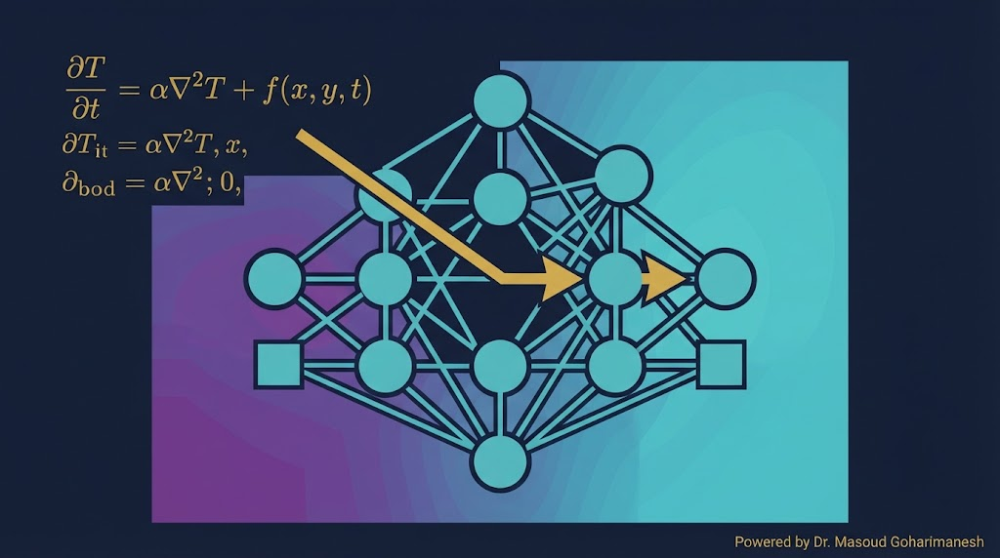
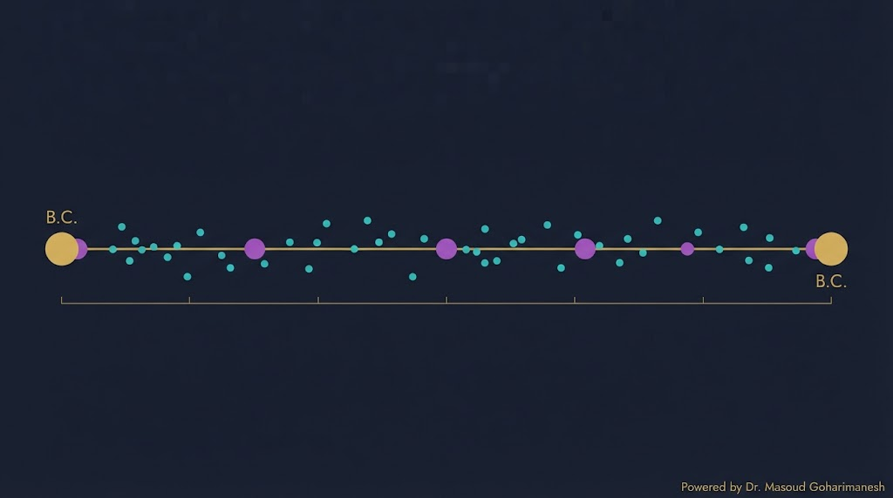
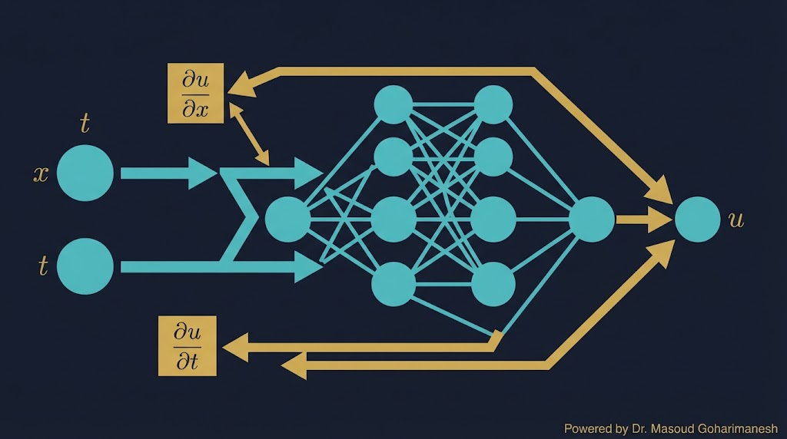
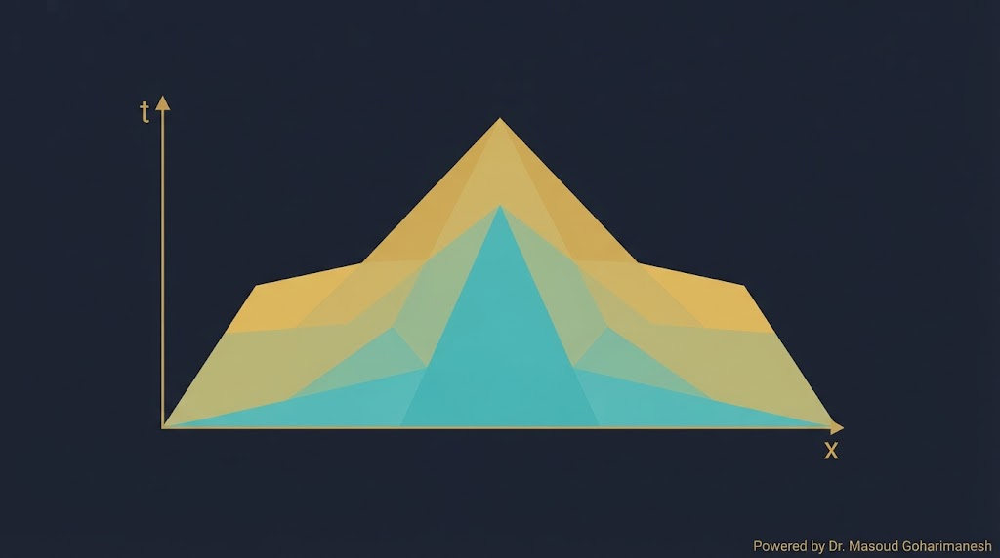
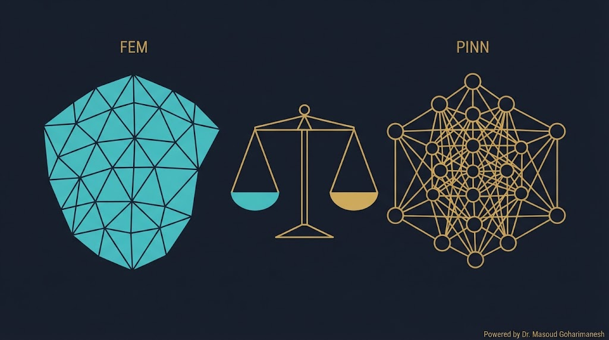
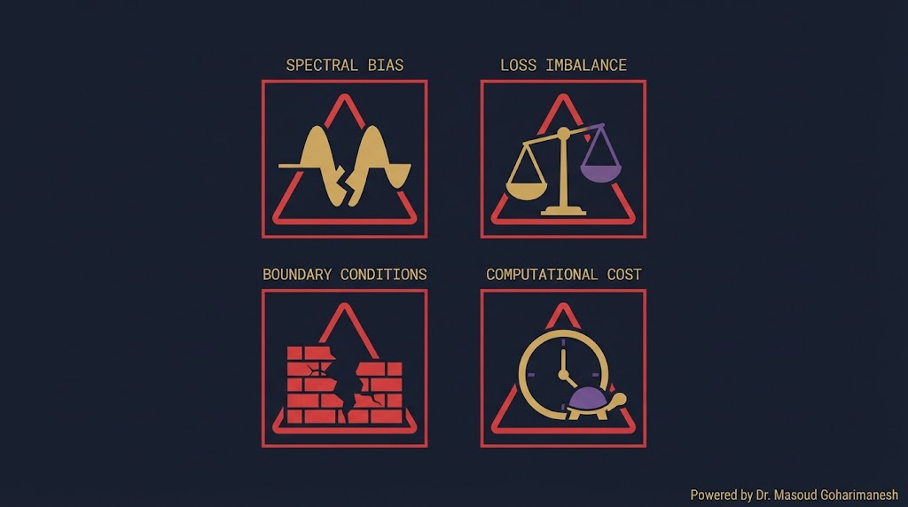
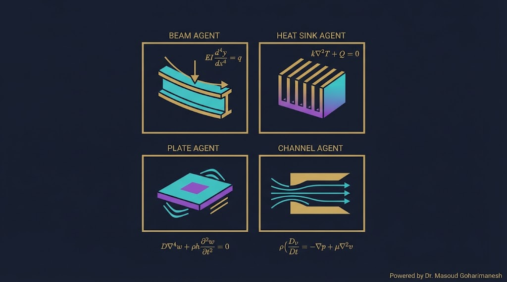

جلسه ۲۱ — PINN
جلسه ۲۱ — PINN
جلسه ۲۱ — PINN
جلسه ۲۱ — PINN
 ستاره این جلسه
به یاد شهدای والامقام
ستاره این جلسه
به یاد شهدای والامقامPhysics-Informed Neural Networks
When PDEs Meet Deep Learning
Scientific AI، Surrogate، Neural Operator
PINN — پیادهسازی کامل
✅ PINN چیست و چطور کار میکند؟
✅ تابع هزینه ترکیبی (Data + PDE + BC)
✅ Autograd — قلب PINN
✅ Collocation Points
✅ حل معادله گرما 1D
✅ پیادهسازی با PyTorch و DeepXDE
فرض کنید یک شبکه عصبی معمولی را روی دادههای پراکنده از یک میله فلزی که یک سرش گرم است آموزش میدهیم. سپس از آن میخواهیم دما را در نقاطی که داده نداریم پیشبینی کند.
آیا شبکه میتواند توزیع دما را درست پیشبینی کند؟
(قبل از دیدن اسلاید بعد، ۳۰ ثانیه فکر کنید)
شبکه فقط داده را «حفظ» میکند — هیچ ایدهای از فیزیک (قانون فوریه) ندارد.
PINN (Physics-Informed Neural Network) یک شبکه عصبی است که علاوه بر داده، معادلات فیزیکی (PDE) را نیز در تابع هزینه خود جای میدهد. این ایده در سال ۲۰۱۹ توسط Maziar Raissi و همکاران معرفی شد.

حتی با چند نقطه، فیزیک کمک میکند
فیزیک در مدل حضور دارد
میتوان پارامترهای مجهول را کشف کرد
وزن هر جزء Loss را تغییر دهید و ببینید چطور بر آموزش تأثیر میگذارد.
import torch import torch.nn as nn class PINN(nn.Module): def __init__(self): super().__init__() self.net = nn.Sequential( nn.Linear(2, 32), nn.Tanh(), nn.Linear(32, 32), nn.Tanh(), nn.Linear(32, 1) ) def forward(self, x, t): return self.net(torch.cat([x, t], dim=1)) def pde_residual(model, x, t, alpha=0.01): x.requires_grad_(True) t.requires_grad_(True) u = model(x, t) # مشتق اول نسبت به t u_t = torch.autograd.grad(u, t, grad_outputs=torch.ones_like(u), create_graph=True)[0] # مشتق اول و دوم نسبت به x u_x = torch.autograd.grad(u, x, grad_outputs=torch.ones_like(u), create_graph=True)[0] u_xx = torch.autograd.grad(u_x, x, grad_outputs=torch.ones_like(u_x), create_graph=True)[0] return u_t - alpha * u_xx # محاسبه Loss def total_loss(model, x_data, t_data, u_data, x_pde, t_pde, x_bc, t_bc, u_bc, lambda_pde=1.0, mu_bc=1.0): # Data loss u_pred = model(x_data, t_data) L_data = torch.mean((u_pred - u_data)**2) # PDE loss residual = pde_residual(model, x_pde, t_pde) L_pde = torch.mean(residual**2) # BC loss u_bc_pred = model(x_bc, t_bc) L_bc = torch.mean((u_bc_pred - u_bc)**2) return L_data + lambda_pde * L_pde + mu_bc * L_bc
نقاطی که در دامنه (نه روی مرز) انتخاب میشوند و PDE در آنها ارزیابی میشود. این نقاط «برچسب» ندارند — فقط فیزیک را اعمال میکنند.

تصادفی، Latin Hypercube، Adaptive
معمولاً ۱۰۰۰ تا ۱۰۰۰۰
RAR: تمرکز روی نقاط با residual بالا [citation:11]
تعداد نقاط را تغییر دهید و ببینید پوشش دامنه چطور تغییر میکند.
PINN بدون Autograd (محاسبه خودکار مشتقات) غیرممکن است. PyTorch و JAX این کار را با «گراف محاسباتی» انجام میدهند.

import torch # ۱. یک تابع ساده: u = x^2 + t^2 x = torch.tensor([2.0], requires_grad=True) t = torch.tensor([3.0], requires_grad=True) u = x**2 + t**2 # ۲. مشتق اول du_dx = torch.autograd.grad(u, x, create_graph=True)[0] du_dt = torch.autograd.grad(u, t, create_graph=True)[0] print(f"du/dx = {du_dx.item()}") # 2x = 4 print(f"du/dt = {du_dt.item()}") # 2t = 6 # ۳. مشتق دوم (نیاز به create_graph=True) d2u_dx2 = torch.autograd.grad(du_dx, x)[0] print(f"d²u/dx² = {d2u_dx2.item()}") # 2 # ۴. مثال PINN: مشتق شبکه عصبی def u(x, t): return torch.sin(x) * torch.exp(-t) x = torch.tensor([0.5], requires_grad=True) t = torch.tensor([1.0], requires_grad=True) u_val = u(x, t) u_t = torch.autograd.grad(u_val, t, create_graph=True)[0] u_x = torch.autograd.grad(u_val, x, create_graph=True)[0] u_xx = torch.autograd.grad(u_x, x)[0] # بررسی معادله گرما: u_t = u_xx residual = u_t - u_xx print(f"PDE residual: {residual.item():.6f}")

$u(x, 0) = \sin(\pi x)$
$u(0, t) = u(1, t) = 0$
$u(x, t) = e^{-\alpha \pi^2 t} \sin(\pi x)$
پارامترها را تغییر دهید و ببینید توزیع دما چطور تغییر میکند.

| ویژگی | FEM | PINN |
|---|---|---|
| مش | نیاز دارد | ندارد (Mesh-free) |
| ابعاد بالا | مشکل | بهتر |
| Inverse | سخت | طبیعی |
| دقت | بالا | متوسط (در مسائل سخت ضعیفتر) [citation:8] |
| سرعت آموزش | — | کند |
| سرعت استنتاج | — | سریع |

شبکههای عصبی تمایل به یادگیری فرکانسهای پایین دارند [citation:8]
توازن بین $L_{data}$ و $L_{PDE}$ دشوار است
اعمال دقیق شرایط مرزی پیچیده
آموزش در مسائل 3D گران است
اگر یک PINN را روی معادله گرما با فرکانس بالا آموزش دهیم (مثلاً $\sin(10\pi x)$ به جای $\sin(\pi x)$)، چه اتفاقی میافتد؟
آیا PINN میتواند فرکانس بالا را یاد بگیرد؟
PINN در فرکانسهای بالا ضعیف است — این همان Spectral Bias است [citation:8]. راهحل: Fourier Features.

معادله گرما، هدایت، جابجایی
تیر، صفحه، الاستیسیته
تیر یکسرگیردار، صفحه
Navier-Stokes، جریان در کانال
کشف پارامترهای مجهول
جایگزین سریع شبیهساز
import deepxde as dde import numpy as np # ۱. تعریف PDE def pde(x, u): du_t = dde.grad.jacobian(u, x, i=0, j=1) du_xx = dde.grad.hessian(u, x, i=0, j=0) return du_t - 0.01 * du_xx # ۲. دامنه geom = dde.geometry.Interval(0, 1) timedomain = dde.geometry.TimeDomain(0, 1) geomtime = dde.geometry.GeometryXTime(geom, timedomain) # ۳. شرایط مرزی و اولیه bc = dde.icbc.DirichletBC(geomtime, lambda x: 0, lambda x, on_boundary: on_boundary) ic = dde.icbc.IC(geomtime, lambda x: np.sin(np.pi * x[:, 0:1]), lambda x, on_initial: on_initial) # ۴. داده data = dde.data.TimePDE(geomtime, pde, [bc, ic], num_domain=2000, num_boundary=100, num_initial=100) # ۵. شبکه عصبی net = dde.nn.FNN([2] + [64]*3 + [1], "tanh", "Glorot uniform") # ۶. مدل و آموزش model = dde.Model(data, net) model.compile("adam", lr=1e-3) model.train(epochs=10000)
import torch import torch.nn as nn import numpy as np # شبکه class PINN(nn.Module): def __init__(self): super().__init__() self.net = nn.Sequential( nn.Linear(2, 64), nn.Tanh(), nn.Linear(64, 64), nn.Tanh(), nn.Linear(64, 64), nn.Tanh(), nn.Linear(64, 1) ) def forward(self, x, t): return self.net(torch.cat([x, t], dim=1)) def pde_residual(model, x, t, alpha=0.01): x.requires_grad_(True); t.requires_grad_(True) u = model(x, t) u_t = torch.autograd.grad(u, t, torch.ones_like(u), create_graph=True)[0] u_x = torch.autograd.grad(u, x, torch.ones_like(u), create_graph=True)[0] u_xx = torch.autograd.grad(u_x, x, torch.ones_like(u_x), create_graph=True)[0] return u_t - alpha * u_xx # داده model = PINN() optimizer = torch.optim.Adam(model.parameters(), lr=1e-3) # آموزش for epoch in range(5000): # Collocation x_pde = torch.rand(1000, 1) * 2 - 1 t_pde = torch.rand(1000, 1) residual = pde_residual(model, x_pde, t_pde) L_pde = torch.mean(residual**2) # BC (سادهشده) x_bc = torch.tensor([[0.0], [1.0]]) t_bc = torch.rand(2, 1) u_bc = model(x_bc, t_bc) L_bc = torch.mean(u_bc**2) # IC x_ic = torch.rand(100, 1) * 2 - 1 t_ic = torch.zeros(100, 1) u_ic_pred = model(x_ic, t_ic) u_ic_true = torch.sin(np.pi * x_ic) L_ic = torch.mean((u_ic_pred - u_ic_true)**2) loss = L_pde + L_bc + L_ic optimizer.zero_grad() loss.backward() optimizer.step() if epoch % 500 == 0: print(f"Epoch {epoch}: Loss = {loss.item():.6f}")
import deepxde as dde import numpy as np # PDE: u_t = 0.01 * u_xx def pde(x, u): du_t = dde.grad.jacobian(u, x, i=0, j=1) du_xx = dde.grad.hessian(u, x, i=0, j=0) return du_t - 0.01 * du_xx geom = dde.geometry.Interval(0, 1) timedomain = dde.geometry.TimeDomain(0, 1) geomtime = dde.geometry.GeometryXTime(geom, timedomain) bc = dde.icbc.DirichletBC(geomtime, lambda x: 0, lambda x, on_boundary: on_boundary) ic = dde.icbc.IC(geomtime, lambda x: np.sin(np.pi * x[:, 0:1]), lambda x, on_initial: on_initial) data = dde.data.TimePDE(geomtime, pde, [bc, ic], num_domain=2000, num_boundary=100, num_initial=100, num_test=500) net = dde.nn.FNN([2] + [64]*3 + [1], "tanh", "Glorot uniform") model = dde.Model(data, net) model.compile("adam", lr=1e-3) losshistory, train_state = model.train(epochs=10000) # ارزیابی dde.saveplot("heat_solution")
[AI] HW21 - نام - شماره دانشجویی به arcslab.uth@gmail.com
ترکیب PDE و شبکه عصبی
Data + PDE + BC
محاسبه خودکار مشتقات
نقاط بدون برچسب برای PDE
Spectral Bias، Loss Imbalance، Cost
Next Session: Digital Twin & Sensor Fusion
• Digital Twin — دوقلوی دیجیتال
• Sensor Fusion
• Kalman Filter + ML
• کاربرد در مکانیک
• پیادهسازی